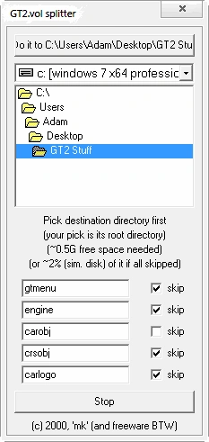
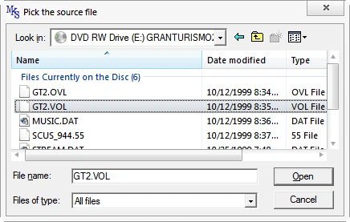
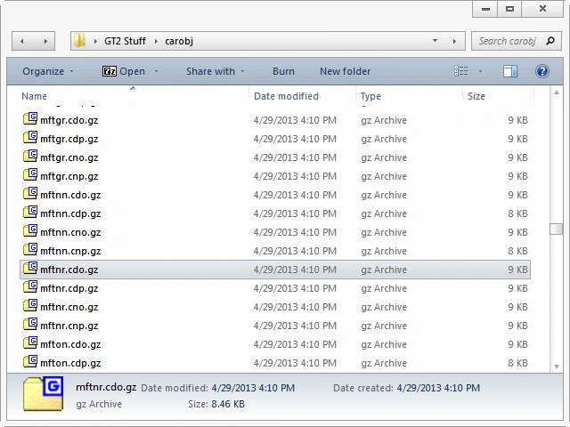
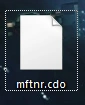
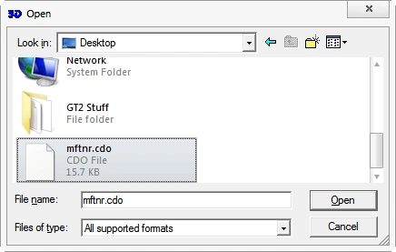
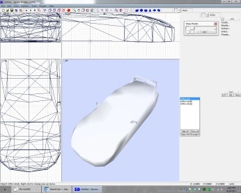
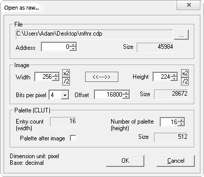
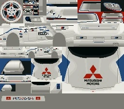
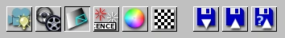
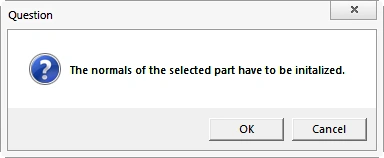

GT2 TutorialClick here, swipe or press arrows <- -> for IDsNote: In many ways, this tutorial is out of date. Many new discoveries and tools have been made since its creation.I am keeping this here simply for posterity and reference to things that may still apply. This isn't a tutorial on how to use ZModeler or Lithium Unwrapper. You'll need your own wheel model, and to map the car in such a way that there is room for the wheel model. You can use my wheels if you wish, or scloink's, or stock wheels, or anything. The opportunities are quite large. Programs you'll need: GT2Vol ZModeler 1.07b (1.06f lacks the GT2 import filter) PSicture 1.01 Lithium Unwrapper FCE Finish (only needed if mapping with LithUnwrap) A good paint program (i.e. Paint Shop Pro, Photoshop, GIMP, Paint.NET) An archiver that can open GZip tape archives (*.c**.gz) First things first, though, is that you have to be good at ZModeler, this includes all sorts of UV mapping skittles (skills). Chapter 1: Getting the mesh you want/basicsWell, now we got that out of the way, pop either the Arcade or Simulation GT2 disc in your CD drive, or via a disc image of it mounted on a virtual drive. Make a new folder, call it "GT2 Stuff" or something. Put it on your desktop. Start GT2Vol and set the directory you wish to extract the files at the top. Deselect "carobj" from the list of items to skip.Click the "Do it" button (Judas Priest have been telling you to all these years, after all!) when you are sure this is where you want to extract the "carobj" files. Not that kind of doing it, sheesh.  Find your CD or virtual CD in My Computer in this Explorer drop down menu and click on it. Click the GT2.vol file! It's just begging for it.  Now just wait for it to progress, and then go to the "carobj" folder inside of the folder you extracted to. This folder contains *.gz archives (the cars) with double extensions. The first extension is the filetype contained. Now, you're probably curious of why there's so many files for each car. Let me explain: The three letter extensions are more descriptive than you may think at first glance. The first letter is always C. The second letter is either D or N. This signifies the day or night variant of the car. Open/closed headlights and the like. I'm sure there's other differences as well. The third letter, is O or P. O is mesh. P is texture. So if you have a *.cnp file, it's the "night texture" of said car, or if you have a *.cdo file it's "day mesh", and so on. Naturally, if you convert the night model (NO) you want to convert the night texture, (NP). If you wish to go the texture conversion route, that is.  We're only worrying about the mesh for now, though. The odd front letters and numbers are the ID's that you can find in the attached ID file. I'll be using a day mesh for this example. When you decide what car you want to do, open the *.cdo.gz version of that ID number (searching makes this easier). Extract the *.cdo.  If you're lazy, Example *.cdo from GT2 Import in ZModeler. Be surprised as you'll now notice that these files include LOD meshes. You obviously only need the highest detail mesh, so discard the rest ("cdo[0] and cdo[1]").   This concludes chapter one. Chapter two will start out on texturing, but don't worry, after that, it will get back to where we left off on this chapter. It's just the textures need to be prepared before mapping them, of course. Chapter 2: Preparing a texture mapThe three methods:Real life/other source images of car aspects (front/side/rear) made into a map (my R30 Silhouette Formula) GT2 screenshots of car aspects (front/side/rear) made into a map (my ZZ-S) GT2 texture conversion and mapping plus GT2 screenshots for odd maps (my Zexel Skyline) I recommend using GT2 wheel textures for the wheels in these car conversions. The first and second methods for making a texture map are a free for all. It's all up to artistic ability and photo editing skills. I won't elaborate on it much. The third and final method is something that actually takes some previous knowledge to do, so I will expand upon that. To extract textures, you'll need to extract the texture for the mesh you're converting. Since our example is mftnr.cdo(.gz), we'll need to extract mftnr.cdp from *.cdp.gz. Open the archive, and extract mftnr.cdp from it. Place it anywhere you wish, but remember where you put it. We'll be opening it with PSicture next. Car textures in GT2 can only be read in raw mode- unlike the *.tim files that are very easy to open and convert- used solely on the individual wheel textures. Opening the raw image takes very, very specific values to achieve. Open PSicture. CTRL+R or "File-> Open as raw...". Select your *.cdp file. And fill out the boxes exactly, exactly as they are here.  You will now notice that you probably got some weirdly colored image. There is a small annoyance- different sections of the bitmap will be rendered correctly under different pallettes. To cycle through the pallette, press F8. If you find something correctly rendered under a certain pallette, save the image as a bitmap (CTRL+S or File-> Save image) for later use. Keep saving bitmaps. If you wish to cycle back, press F7. You'll save at least a few different bitmaps because of the messed up pallettes. It'll be later that you choose the correct of each section to make a starter's map for later UV mapping and reference. Here is one of the pallettes. Notice some of the areas are rendered correctly and others aren't:  After you have all your different bitmaps together, it'll be up to you to build a map out of these different aspects. If certain aspects of the map look like they'd be hard to UV map, feel free to take screenshots of the problem areas for easier mapping, or make your own textures for a certain area. Be creative, if you wish. Try to keep it as seamless as possible. I won't continue further because I assume you have enough knowledge of Re-Volt bitmaps to make a satisfactory map. The only thing to worry about is to make sure you've made sure where the wheels go on the map. Chapter 3: Back to ZModeler and right back outSo you have that car imported still, yes? The LOD models deleted? Good. Now, here's what you need to do. This part is indeed a little iffy, so pay attention. Delete all materials (what, you ask? this isn't a ZModeler tutorial) and add a new material, the bitmap you made in the previous chapter. When all is good, export this as a *.3ds. Why? Because we're leaving ZModeler. Trust me, it's crap for this.Chapter 4: Lithium UnwrapperIf you have a better understanding of ZModeler's mapping than LithUnwrap's and don't feel like changing workflow, skip this chapter entirely and continue from where you left off (adding the material in ZModeler). If you wish to use Lithium Unwrapper, I expect you know how to use it, basically. I'll go through the basics, but I'm not holding hands here.Open Lithium Unwrapper. Go to File-> Model-> Open in the menu, and open the *.3ds file you created. With the associated material, it should load fully. Now, for the mapping. There are many possible ways to unwrap the model, and given the freeform control, it's very easy and nimble to do crazy things in a fraction of the time it takes to do it in ZModeler. Once you have the car satisfactorily mapped, File-> Model -> Save. Re-import this into ZModeler. However, there will be another hair-pulling step involved that you may not have seen coming. You see- when you converted the file to *.3ds, you totally messed up the vertex normals. The normals need recalculated. There are different ways to do this, probably some ways that are faster. But here's my way: Subchapter: FCE Finish Since I'm using FCE Finish to do this, I need to take that model I just imported back into ZModeler and export is as an *.fce, the NFS4 format. Once the file is exported, open it in FCE Finish. FCE Finish's link after install might be broken like it was for me. Simply the installed shortcut not directing to the right location, but it was easy enough to direct it to the right executable. Also, you'll get a little pop-up that there was no help.dat. Don't worry about that either. What you want to do is, when you got the file open (don't worry about texture maps or anything), select "Surfaces". The one clicked:  When you click it, you'll get a pop-up.  Hit OK. Now, let the adjusting begin. You can get real technical, but I'd recommend just touching "Smooth by angle limit". "No" (the furthest right) is the most surefire option, but if you want to retain some edges by angle amount, tweak to taste. When all looks good, simply save the *.fce. Chapter 5: Final Preparations for Re-Volt!This is where it'll start getting a lot like NFS4 conversions, this is the home stretch. I'll assume whichever path you took, you now have a workable texture, decided on wheels and a wheel texture, and have the car body fully mapped and worked out. At this point, you'll want to do the standard NFS4 procedure to get a PRM that actually works right in Re-Volt (isn't clear/isn't black). Once you have it exported and shaded- I use a body size of 0.5, but if you want it closer to NFS4 TMaM size, you'll want it closer to 0.4. From here, you're on your own, come up with something awesome.Extra tips: 1. Delete extraneous polygons from the mesh if you aren't going to use them (there are some extra polygons for some elements on the cars sometimes, that you may or may not want) 2. If you're handy with modelling- model 3D wheel wells (like MOH did with my Zexel Skyline) because the transparency trick doesn't work too good in Re-Volt 3. Use LithUnwrap's optimize options for clearing out unneeded vertices before exporting the *.3ds file I wish you luck. If you need personal help, just ask. |